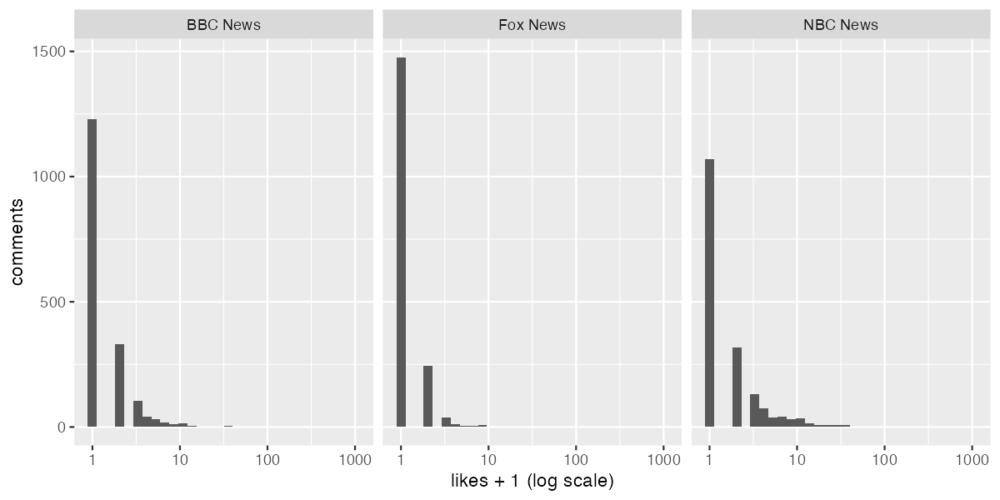
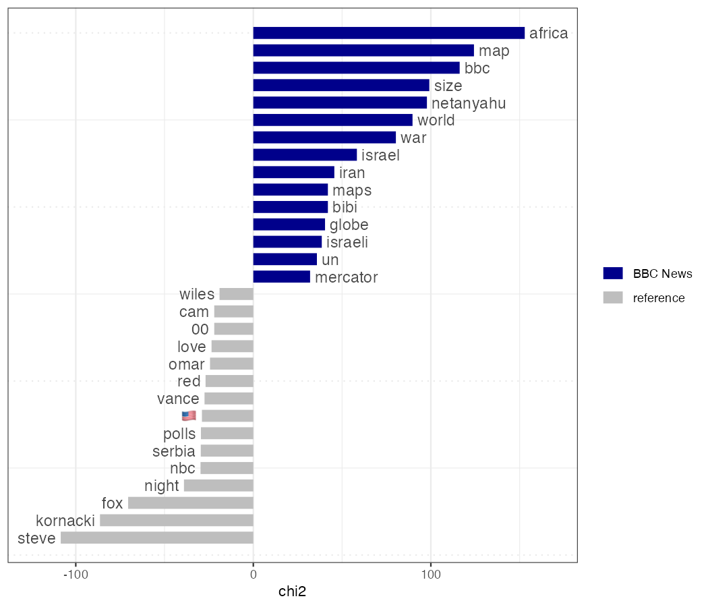
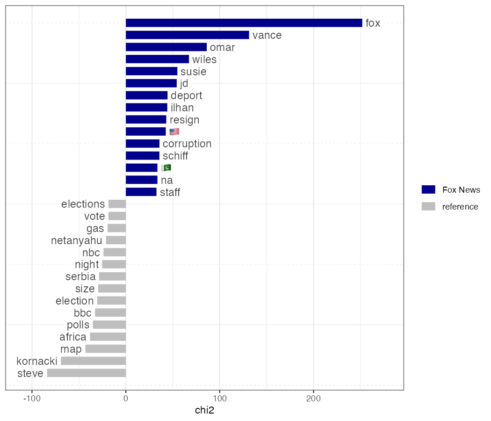
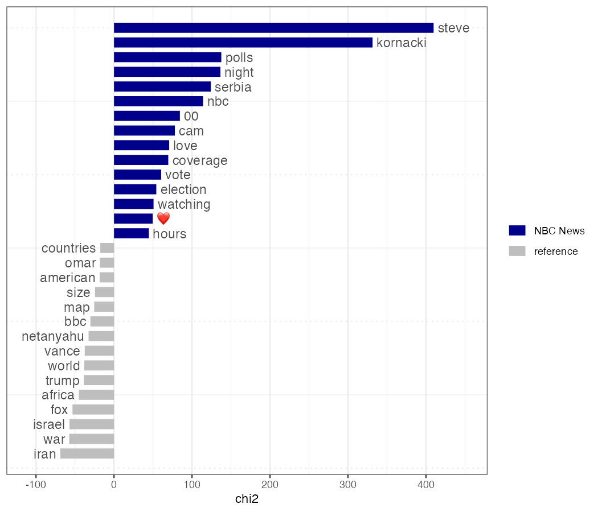
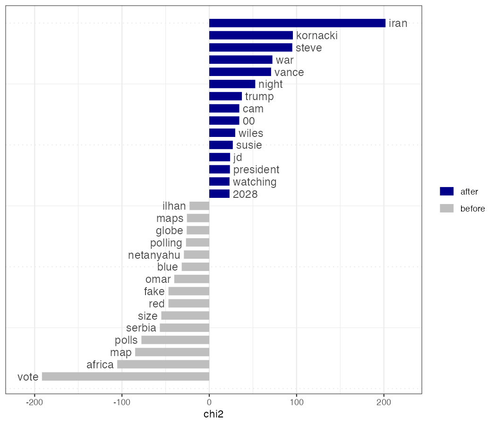
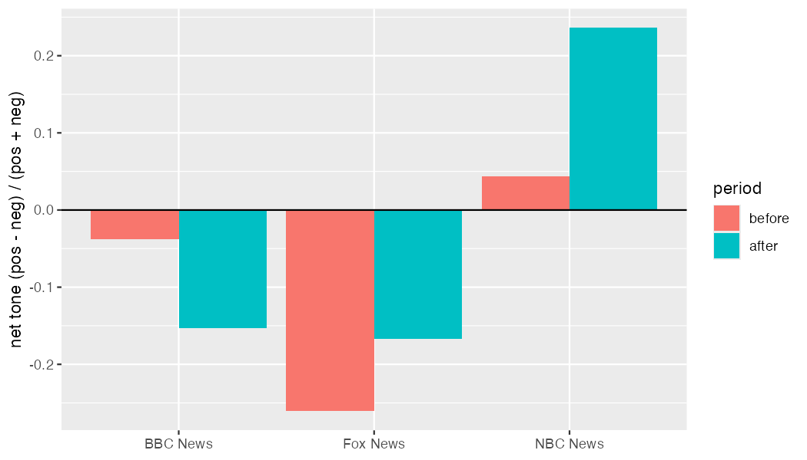

nzchar(Sys.getenv("YOUTUBE_KEY")) # TRUE? Ready. Do not print the key.EPPS 6302 Methods of Data Collection and Production: Assignment 7
Social media data from the YouTube API
Instructor: Karl Ho
What you will produce
A small, documented collection of YouTube videos and comments on the 2026 US midterm elections — made with an API key and a quota plan, before and after Election Day (3 November); a quanteda analysis of the comments by channel; and a short report on what a comment section is a sample of, compared with the tweets and presidential documents of Assignment 6.
NoteHow this page renders
Quoted blocks are the assignment sheet, word for word; the code and notes under each one are my work.
Collection and analysis chunks are set to eval: false: they were run interactively, so rendering never calls the API. Chunks marked Result run at render time and read only the files written to results/assign07/ — collection logs, manifests, aggregate tables and plots. The comments themselves stay in data/youtube/, which is gitignored and deleted by the delete_by date in each manifest. No comment text, commenter names, commenter channel IDs or API key appear on this page.
0. Set up
0a. API key
a. A YouTube Data API key in your user
.RenvironasYOUTUBE_KEY=...(Prepare for Class 9). Check withnzchar(Sys.getenv("YOUTUBE_KEY")). If it isFALSE, run the checks in Part 1b of the script — a.Renvironin your project folder replaces~/.Renviron.
YOUTUBE_KEY is the variable tuber reads (yt_get_key()). Never put the key in a script.
If it is FALSE: the Part 1b checks, without printing the key. At start-up R reads .Renviron in the working directory if there is one, and then ignores ~/.Renviron.
file.exists(".Renviron") # TRUE: this file replaces ~/.Renviron
file.exists("~/.Renviron") # FALSE: wrong place or wrong name
list.files("~", pattern = "Renviron", all.files = TRUE) # ".Renviron.txt"?
Sys.getenv("R_ENVIRON_USER") # set? R reads that file instead
sub("=.*", "=<hidden>", readLines("~/.Renviron")) # names typed right?
readRenviron("~/.Renviron") # load it now, then check again0b. tuber and httr2
b. The development version of tuber (2.0.0.9000), with a current httr2:
pak::pak(c("soodoku/tuber", "httr2")). CheckpackageVersion("tuber")andpackageVersion("httr2")(1.1.0 or later). Old tutorials useget_comment_threads(),get_channel_stats()andget_stats(); all three were renamed (Part 0).
tuber needs a current httr2 but does not say so; naming httr2 makes pak update it. pak installed tuber 3.0.0, the current GitHub release, which needs httr2 1.2.0 or later; the collection used 3.0.0, and each manifest records the version.
need <- function(pkg, min = "0.0") {
!requireNamespace(pkg, quietly = TRUE) ||
packageVersion(pkg) < package_version(min)
}
if (need("pak")) install.packages("pak")
if (need("tuber", "2.0.0.9000") || need("httr2", "1.2.0")) {
pak::pak(c("soodoku/tuber", "httr2"))
}
cran_pkgs <- c("tidyverse", "quanteda", "quanteda.textstats",
"quanteda.textplots", "jsonlite", "usethis")
missing <- cran_pkgs[vapply(cran_pkgs, need, logical(1))]
if (length(missing) > 0) install.packages(missing)library(tuber)
library(tidyverse)
library(quanteda)
library(quanteda.textstats)
library(quanteda.textplots)
library(jsonlite)
packageVersion("tuber") # 2.0.0.9000 or later
packageVersion("httr2") # 1.1.0 or later
dir_yt <- "data/youtube" # raw data: gitignored, deleted by delete_by
dir_out <- "results/assign07" # logs, manifests, aggregates: published
dir.create(dir_yt, recursive = TRUE, showWarnings = FALSE)
dir.create(dir_out, recursive = TRUE, showWarnings = FALSE)Renamed in tuber 2.0: get_comment_threads() → list_comment_threads(), get_channel_stats() → get_channel_details(), get_stats() → get_video_stats().
0c. The script
c. Download
YouTubeAPI02_usmidtermelections.Rfrom Teams. The parts below follow it. An API key is all this assignment needs: skip Part 7 (OAuth).
The code follows YouTubeAPI02_usmidtermelections.R; part numbers in the quoted text refer to its parts. Part 7 (OAuth) is skipped.
0d. .gitignore
d.
data/and.Renvironin.gitignore— check before the first call.
results/assign07/ must not be ignored: the logs, manifests and aggregates are published from there.
# Each ignored path prints with the .gitignore rule that ignores it
system("git check-ignore -v data/youtube/test.rds .Renviron")
system("git check-ignore -v results/assign07/test.csv") # should print nothing
# If either of the first two is missing:
# usethis::use_git_ignore(c("data/", ".Renviron"))0e. Parameters
Not an assignment item: everything the collection depends on, in one place. The manifests record these values.
search_term <- "US midterm election"
election_day <- as.Date("2026-11-03")
# Before Election Day: videos published 1 September – 27 October 2026
pre_after <- "2026-09-01T00:00:00Z"
pre_before <- "2026-10-28T00:00:00Z" # exclusive: through 27 October (UTC)
pre_since <- as.Date("2026-09-01")
pre_until <- as.Date("2026-10-27")
# After Election Day: 4 November 2026 to the day you collect
post_after <- "2026-11-04T00:00:00Z"
post_since <- as.Date("2026-11-04")
n_search <- 100 # results per search ordering (2 calls each)
n_videos_per_channel <- 3 # assignment allows 2-4
n_comments_max <- 300 # per video, replies included
# Title filter for the channel route (2c), written down before reading titles
title_regex <- "midterm|election|senate|house race|ballot|\\bvot(e|es|er|ers|ing)\\b|congress"
title_pattern <- regex(title_regex, ignore_case = TRUE)
# Three channels that differ in kind. Check the titles returned in 2c
# match the labels before collecting.
channels <- tribble(
~label, ~kind, ~channel_id,
"NBC News", "national network", "UCeY0bbntWzzVIaj2z3QigXg",
"Fox News", "cable news", "UCXIJgqnII2ZOINSWNOGFThA",
"BBC News", "international broadcaster", "UC16niRr50-MSBwiO3YDb3RA"
)
now_utc <- function() format(Sys.time(), tz = "UTC", usetz = TRUE)1. Read
a. tuber — the vignettes API conventions and Batch processing & quota management, https://gojiplus.github.io/tuber/.
b. YouTube Data API quota costs, https://developers.google.com/youtube/v3/determine_quota_cost, and the Developer Policies, sections III.E.4 and III.E.6, https://developers.google.com/youtube/terms/developer-policies.
c. Freelon, Deen. 2018. “Computational Research in the Post-API Age.” Political Communication 35 (4): 665–668.
2. Collect
2a. Plan the quota first
a. Plan the quota first (Part 2). Before any call, write a table: each call you intend to make, how many pages, and its cost. Search calls (100 a day) and units (10,000 a day) are separate budgets. After collecting, compare with
yt_get_quota_usage().
Both budgets reset at midnight Pacific. Reads cost 1 unit per page: 50 items for videos.list, channels.list and playlistItems.list, 100 for commentThreads.list and comments.list. The uploads estimates assume roughly 10–20 uploads a day per channel; the actual pages are counted in 2c.
quota_plan <- tibble::tribble(
~period, ~step, ~call, ~endpoint, ~pages, ~search_calls, ~units,
"before", "2b", "yt_search relevance, 100 results", "search.list", 2, 2, 0,
"before", "2b", "yt_search viewCount, 100 results", "search.list", 2, 2, 0,
"before", "2b", "get_video_stats, <= 200 unique search videos", "videos.list", 4, 0, 4,
"before", "2c", "get_channel_details, 3 channels", "channels.list", 1, 0, 1,
"before", "2c", "list_channel_videos back to 1 Sep, 3 channels", "playlistItems.list", 55, 0, 55,
"before", "2c", "get_video_stats, title-filtered uploads", "videos.list", 6, 0, 6,
"before", "2d", "get_all_comments, 9 videos x <= 300", "commentThreads + comments", 90, 0, 90,
"after", "2e", "yt_search relevance + viewCount", "search.list", 4, 4, 0,
"after", "2e", "get_video_stats, search videos", "videos.list", 4, 0, 4,
"after", "2e", "list_channel_videos back to 4 Nov, 3 channels", "playlistItems.list", 6, 0, 6,
"after", "2e", "get_video_stats, title-filtered uploads", "videos.list", 2, 0, 2,
"after", "2e", "get_all_comments, 9 videos x <= 300", "commentThreads + comments", 90, 0, 90
)
quota_plan |>
dplyr::bind_rows(dplyr::summarise(quota_plan, period = "total", step = "", call = "",
endpoint = "", pages = sum(pages),
search_calls = sum(search_calls), units = sum(units))) |>
knitr::kable(col.names = c("Period", "Item", "Call", "Endpoint", "Pages",
"Search calls", "Units"))| Period | Item | Call | Endpoint | Pages | Search calls | Units |
|---|---|---|---|---|---|---|
| before | 2b | yt_search relevance, 100 results | search.list | 2 | 2 | 0 |
| before | 2b | yt_search viewCount, 100 results | search.list | 2 | 2 | 0 |
| before | 2b | get_video_stats, <= 200 unique search videos | videos.list | 4 | 0 | 4 |
| before | 2c | get_channel_details, 3 channels | channels.list | 1 | 0 | 1 |
| before | 2c | list_channel_videos back to 1 Sep, 3 channels | playlistItems.list | 55 | 0 | 55 |
| before | 2c | get_video_stats, title-filtered uploads | videos.list | 6 | 0 | 6 |
| before | 2d | get_all_comments, 9 videos x <= 300 | commentThreads + comments | 90 | 0 | 90 |
| after | 2e | yt_search relevance + viewCount | search.list | 4 | 4 | 0 |
| after | 2e | get_video_stats, search videos | videos.list | 4 | 0 | 4 |
| after | 2e | list_channel_videos back to 4 Nov, 3 channels | playlistItems.list | 6 | 0 | 6 |
| after | 2e | get_video_stats, title-filtered uploads | videos.list | 2 | 0 | 2 |
| after | 2e | get_all_comments, 9 videos x <= 300 | commentThreads + comments | 90 | 0 | 90 |
| total | 266 | 8 | 258 |
The comment estimate allows 10 units a video: three commentThreads pages of 100 plus comments.list pages for threads with more replies than the preview carries. The plan uses 8 of 100 search calls and about 260 of 10,000 units.
After each collection, save tuber’s session estimate — it counts only this R session, so run each period’s collection in a fresh session:
save_quota <- function(period) {
yt_get_quota_usage() |>
mutate(period = period, recorded_at = now_utc()) |>
write_csv(file.path(dir_out, paste0("quota_used_", period, ".csv")))
}Result — plan against tuber’s estimate
show_tab(dplyr::bind_rows(out_csv("quota_used_pre.csv"), out_csv("quota_used_post.csv")))| bucket | quota_used | quota_limit | quota_remaining | reset_time | requests_last_minute | period | recorded_at |
|---|---|---|---|---|---|---|---|
| data | 325 | 10000 | 9675 | 2026-11-10 08:00:00 | 94 | pre | 2026-11-09 19:30:00 UTC |
| search | 4 | 100 | 96 | 2026-11-10 08:00:00 | 94 | pre | 2026-11-09 19:30:00 UTC |
| video_uploads | 0 | 100 | 100 | 2026-11-10 08:00:00 | 94 | pre | 2026-11-09 19:30:00 UTC |
| data | 65 | 10000 | 9935 | 2026-11-10 08:00:00 | 69 | post | 2026-11-09 19:36:14 UTC |
| search | 4 | 100 | 96 | 2026-11-10 08:00:00 | 69 | post | 2026-11-09 19:36:14 UTC |
| video_uploads | 0 | 100 | 100 | 2026-11-10 08:00:00 | 69 | post | 2026-11-09 19:36:14 UTC |
2b. Find the videos — twice
b. Find the videos — twice (Part 3a). Search
"US midterm election"for videos published 1 September – 27 October 2026, once withorder = "relevance"and once withorder = "viewCount"(100 results each).
run_search <- function(order, after, before) {
yt_search(term = search_term,
published_after = after,
published_before = before,
order = order,
max_results = n_search)
}
# i-iii: overlap, reported vs. returned, duplicates
summarise_search <- function(s, period) {
imap(s, \(x, ord) tibble(
period = period,
order = ord,
returned = nrow(x),
total_reported = if (is.null(attr(x, "total_results"))) NA_real_ else attr(x, "total_results"),
duplicates = sum(duplicated(x$video_id)),
unique_videos = n_distinct(x$video_id))) |>
list_rbind() |>
mutate(in_both = length(intersect(s$relevance$video_id, s$viewCount$video_id)))
}
top_channels <- function(s, period, n = 5) {
imap(s, \(x, ord) x |>
distinct(video_id, .keep_all = TRUE) |>
count(channel_title, sort = TRUE, name = "videos") |>
slice_head(n = n) |>
mutate(period = period, order = ord, .before = 1)) |>
list_rbind()
}search_pre <- list(
relevance = run_search("relevance", pre_after, pre_before),
viewCount = run_search("viewCount", pre_after, pre_before)
)
write_rds(search_pre, file.path(dir_yt, "search_pre.rds"))
search_summary_pre <- summarise_search(search_pre, "before")
search_channels_pre <- top_channels(search_pre, "before")
search_summary_pre
search_channels_prei. How many videos appear in both lists? Which channels dominate each?
in_both in the search summary; top_channels() lists the five channels with the most videos in each ordering.
ii.
attr(x, "total_results")againstnrow(x): what does YouTube say exists, and what did it give you?
total_reported against returned in the search summary.
iii. Search can return the same video more than once. Report
sum(duplicated(x$video_id))for each list, and keep one row per video (distinct(video_id, .keep_all = TRUE)) before joining the video statistics of Part 4.
duplicates in the search summary. One row per video, then the Part 4 statistics:
search_videos_pre <- bind_rows(search_pre, .id = "order") |>
distinct(video_id, .keep_all = TRUE)
stats_search_pre <- get_video_stats(search_videos_pre$video_id) |>
select(any_of(c("video_id", "view_count", "like_count", "comment_count")))
search_info_pre <- search_videos_pre |>
select(video_id, title, channel_id, channel_title, published_at) |>
left_join(stats_search_pre, by = "video_id", relationship = "one-to-one")
search_info_pre |>
arrange(desc(view_count)) |>
select(channel_title, title, view_count, comment_count) |>
head(10)write_csv(search_summary_pre, file.path(dir_out, "search_summary_pre.csv"))
write_csv(search_channels_pre, file.path(dir_out, "search_channels_pre.csv"))Result — searches before Election Day
show_tab(out_csv("search_summary_pre.csv"))| period | order | returned | total_reported | duplicates | unique_videos | in_both |
|---|---|---|---|---|---|---|
| before | relevance | 100 | 1e+06 | 1 | 99 | 17 |
| before | viewCount | 100 | 1e+06 | 0 | 100 | 17 |
show_tab(out_csv("search_channels_pre.csv"))| period | order | channel_title | videos |
|---|---|---|---|
| before | relevance | Al Jazeera English | 38 |
| before | relevance | Let’s Talk Elections | 6 |
| before | relevance | CNN | 5 |
| before | relevance | FRANCE 24 English | 4 |
| before | relevance | India Global Review | 4 |
| before | viewCount | CNN | 37 |
| before | viewCount | MS NOW | 6 |
| before | viewCount | Al Jazeera English | 4 |
| before | viewCount | NBC News | 3 |
| before | viewCount | TLDR News Global | 3 |
2c. Choose three channels
c. Choose three channels that covered the campaign and differ in kind — for example a national network (NBC News, as in Part 3b), a cable news channel, and a local station or an international broadcaster. For each:
get_channel_details(), then find its election videos withlist_channel_videos()(the cheap route, Part 3b) rather than search, and filter titles with a pattern you write down (e.g."midterm|election|senate|house race|ballot").
NBC News (national network), Fox News (cable news) and BBC News (international broadcaster). The title filter is title_regex in 0e: the sheet’s example plus vote forms and congress.
chan_details <- get_channel_details(channel_ids = channels$channel_id)
chan_details |>
select(any_of(c("channel_id", "id", "title", "country",
"subscriber_count", "video_count", "view_count")))
# Titles must match the labels in `channels`. Subscriber counts are rounded by YouTube.list_channel_videos() reads the channel’s uploads playlist, newest first, 50 videos per unit. Fetching one page at a time and stopping at the first page that crosses the start date counts exactly how many pages it took (ii below).
parse_uploads <- function(items) {
tibble(
video_id = map_chr(items, \(i) pluck(i, "contentDetails", "videoId",
.default = pluck(i, "snippet", "resourceId", "videoId",
.default = NA_character_))),
published = map_chr(items, \(i) pluck(i, "contentDetails", "videoPublishedAt",
.default = pluck(i, "snippet", "publishedAt",
.default = NA_character_))),
title = map_chr(items, \(i) pluck(i, "snippet", "title",
.default = NA_character_))
)
}
uploads_since <- function(channel_id, since, max_pages = 100) {
pages <- list()
token <- NULL
repeat {
resp <- list_channel_videos(channel_id, max_results = 50,
page_token = token, simplify = FALSE)
page <- parse_uploads(resp$items)
pages[[length(pages) + 1]] <- page
token <- resp$nextPageToken
oldest <- suppressWarnings(min(as.Date(page$published), na.rm = TRUE))
Sys.sleep(0.5)
if (is.null(token) || oldest < since || length(pages) >= max_pages) break
}
videos <- list_rbind(pages) |> mutate(date = as.Date(published))
list(videos = videos, pages = length(pages), oldest = min(videos$date, na.rm = TRUE))
}route_pre <- channels |>
mutate(res = map(channel_id, \(id) uploads_since(id, pre_since), .progress = TRUE),
pages = map_int(res, "pages"),
oldest = map_vec(res, "oldest"),
videos = map(res, "videos")) |>
select(-res)
uploads_pre <- route_pre |>
select(label, kind, videos) |>
unnest(videos) |>
filter(date >= pre_since, date <= pre_until) |>
distinct(video_id, .keep_all = TRUE) |>
mutate(match = str_detect(title, title_pattern))
write_rds(uploads_pre, file.path(dir_yt, "uploads_pre.rds"))i. Did the channel route find videos the search missed?
ii. The uploads list runs newest first, 50 videos per unit. How many units did it take to reach 1 September for each channel?
kept_not_in_search answers i. pages is the units spent on playlistItems.list to reach 1 September (tuber may add one channels.list unit per call to look up the uploads playlist; compare with the quota estimate).
route_summary <- function(uploads, route, search_ids, period) {
uploads |>
group_by(label, kind) |>
summarise(uploads_in_window = n(),
kept_by_filter = sum(match),
kept_also_in_search = sum(match & video_id %in% search_ids),
kept_not_in_search = sum(match & !video_id %in% search_ids),
in_search_but_dropped = sum(!match & video_id %in% search_ids),
.groups = "drop") |>
left_join(route |> select(label, pages, oldest), by = "label") |>
mutate(period = period, .before = 1)
}search_ids_pre <- unique(c(search_pre$relevance$video_id, search_pre$viewCount$video_id))
route_summary_pre <- route_summary(uploads_pre, route_pre, search_ids_pre, "before")
route_summary_pre
write_csv(route_summary_pre, file.path(dir_out, "channel_route_pre.csv"))iii. Is your title filter too narrow or too broad? Read 20 titles it kept and 20 it dropped.
Channel video titles are public; they are printed here, not saved.
set.seed(6302)
uploads_pre |> filter(match) |> slice_sample(n = 20) |> select(label, date, title)
uploads_pre |> filter(!match) |> slice_sample(n = 20) |> select(label, date, title)Result — channel route before Election Day
show_tab(out_csv("channel_route_pre.csv"))| period | label | kind | uploads_in_window | kept_by_filter | kept_also_in_search | kept_not_in_search | in_search_but_dropped | pages | oldest |
|---|---|---|---|---|---|---|---|---|---|
| before | BBC News | international broadcaster | 1271 | 66 | 1 | 65 | 0 | 32 | 2026-08-30 |
| before | Fox News | cable news | 3022 | 143 | 0 | 143 | 0 | 75 | 2026-08-31 |
| before | NBC News | national network | 2889 | 201 | 2 | 199 | 1 | 72 | 2026-08-31 |
2d. Collect comments
d. Collect comments with
collect_comments()(Part 5c) from two to four videos per channel, at most 300 comments per video. Write the collection log and the manifest (Part 5d). Record for each video the comment count it reports (get_video_stats()) and the number you received.
Statistics for the title-filtered uploads, then the n_videos_per_channel (3) most-viewed per channel. Videos with comments disabled are kept in the selection so the log records them; comment_count is missing when comments are disabled.
select_targets <- function(uploads, period) {
kept <- uploads |> filter(match) |> distinct(video_id, .keep_all = TRUE)
stats <- get_video_stats(kept$video_id) |>
select(any_of(c("video_id", "view_count", "comment_count")))
kept <- kept |> left_join(stats, by = "video_id", relationship = "one-to-one")
status <- kept |>
group_by(label) |>
summarise(kept_videos = n(),
comments_disabled_or_missing = sum(is.na(comment_count)),
.groups = "drop") |>
mutate(period = period, .before = 1)
targets <- kept |>
group_by(label) |>
slice_max(view_count, n = n_videos_per_channel, with_ties = FALSE) |>
ungroup() |>
mutate(period = period)
list(targets = targets, status = status)
}sel_pre <- select_targets(uploads_pre, "before")
targets_pre <- sel_pre$targets
targets_pre |> select(label, date, title, view_count, comment_count)
write_csv(sel_pre$status, file.path(dir_out, "channel_comment_status_pre.csv"))collect_comments() (Part 5c). Disabled comments and empty sections arrive as warnings (tuber_comments_disabled, tuber_no_comments) with an empty data frame; other failures are errors. Record each outcome and keep going.
collect_comments <- function(video_id, n_max = 300) {
status <- "ok"
out <- tryCatch(
withCallingHandlers(
get_all_comments(video_id, max_results = n_max),
tuber_comments_disabled = function(w) {
status <<- "disabled"; invokeRestart("muffleWarning")
},
tuber_no_comments = function(w) {
if (status == "ok") status <<- "none"; invokeRestart("muffleWarning")
}),
error = function(e) e)
# If tuber signals an empty section another way, still log it as "none"
if (!inherits(out, "error") && status == "ok" && NROW(out) == 0) status <- "none"
Sys.sleep(1) # be polite
if (inherits(out, "error")) {
return(list(data = NULL,
log = tibble(video_id, status = "error", n = 0L,
message = conditionMessage(out))))
}
out <- as_tibble(out)
if (nrow(out) > 0) out$video_id <- video_id # replies can come back without it
list(data = out,
log = tibble(video_id, status, n = nrow(out), message = NA_character_))
}i. Before you join comments to video titles, make sure each video appears once and each comment once:
distinct(comment_id, .keep_all = TRUE)andleft_join(..., relationship = "many-to-one"). A repeated video otherwise copies its comments, andcorpus()stops with docnames must be unique.
collect_set() keeps each video once and each comment once, then joins many-to-one. The log (Part 5d) records for each video reported (its comment_count from get_video_stats()) and received.
collect_set <- function(targets) {
runs <- map(targets$video_id, collect_comments, n_max = n_comments_max,
.progress = TRUE)
video_meta <- targets |>
distinct(video_id, .keep_all = TRUE) |>
select(video_id, channel_title = label, video_title = title,
video_date = date, period, view_count, reported = comment_count)
log <- map(runs, "log") |>
list_rbind() |>
rename(received = n) |>
mutate(collected_at = now_utc()) |>
left_join(video_meta, by = "video_id", relationship = "one-to-one") |>
relocate(channel_title, period, video_id, video_title, video_date,
view_count, reported, received, status)
comments <- map(runs, "data") |>
list_rbind() |>
distinct(comment_id, .keep_all = TRUE) |>
left_join(video_meta |> select(video_id, channel_title, video_title, period),
by = "video_id", relationship = "many-to-one")
list(log = log, comments = comments)
}coll_pre <- collect_set(targets_pre)
coll_pre$log |> select(channel_title, video_title, reported, received, status)
write_csv(coll_pre$log, file.path(dir_out, "log_pre.csv")) # published
write_rds(coll_pre$comments, file.path(dir_yt, "comments_pre.rds")) # gitignored
save_quota("pre")ii. Check the manifest records the search term exactly as you sent it — and that the key is nowhere in it.
write_manifest() records how the data were collected and checks both before it returns.
write_manifest <- function(period, after, before, since, until,
searches, route_summary, targets, comments, path) {
m <- list(
source = "YouTube Data API v3 via tuber",
tuber = as.character(packageVersion("tuber")),
credential = "API key (public data only); key not stored",
period = period,
collected_at = now_utc(),
search = list(term = search_term,
orders = names(searches),
max_results = n_search,
published_after = after,
published_before = before,
returned = map_int(searches, nrow),
total_reported = map(searches, \(x) attr(x, "total_results")),
duplicates = map_int(searches, \(x) sum(duplicated(x$video_id)))),
channels = route_summary |> select(label, kind, pages, oldest) |>
left_join(channels |> select(label, channel_id), by = "label"),
channel_window = c(format(since), format(until)),
title_filter = title_regex,
selection = sprintf(paste("Per channel, the %d most-viewed uploads in the window",
"whose title matches the filter; at most %d comments",
"(replies included) per video"),
n_videos_per_channel, n_comments_max),
videos = targets |> select(video_id, channel = label),
n_videos = nrow(targets),
n_comments = nrow(comments),
retention = "Delete or refresh within 30 days (YouTube API Developer Policies III.E.4.d)",
delete_by = format(Sys.Date() + 30)
)
write_json(m, path, auto_unbox = TRUE, pretty = TRUE)
# The term as sent, and no key anywhere in the file
key <- Sys.getenv("YOUTUBE_KEY")
stopifnot(identical(read_json(path)$search$term, search_term),
!nzchar(key) || !any(grepl(key, readLines(path), fixed = TRUE)))
invisible(m)
}write_manifest("before", pre_after, pre_before, pre_since, pre_until,
search_pre, route_summary_pre, targets_pre, coll_pre$comments,
file.path(dir_out, "manifest_pre.json"))Result — log and manifest before Election Day
log_pre <- out_csv("log_pre.csv")
show_tab(if (!is.null(log_pre))
dplyr::select(log_pre, channel_title, video_title, reported, received, status))| channel_title | video_title | reported | received | status |
|---|---|---|---|---|
| BBC News | Netanyahu loses majority in Israel - but no clear election winner. What now? | BBC News | 2039 | 300 | ok |
| BBC News | UN votes to adopt new world map to reflect Africa’s true size | BBC News | 6335 | 300 | ok |
| BBC News | Are the Democrats heading for a midterms landslide? | BBC Americast | 795 | 300 | ok |
| Fox News | Omar’s staff reportedly got her birth date CHANGED after she was elected to Congress | 4989 | 300 | ok |
| Fox News | ELECTION SHAKEUP?: Final Fox News Power Rankings reveals MAJOR shift | 3178 | 300 | ok |
| Fox News | Ilhan Omar allegations spark FIRESTORM over congressional seat | 2191 | 300 | ok |
| NBC News | How Senate races are shaping up in battleground states ahead of midterms | 659 | 300 | ok |
| NBC News | Kornacki: Where Democrats see openings for Senate gains in deep-red states | 621 | 300 | ok |
| NBC News | Serbian student-led movement celebrates election result | 311 | 300 | ok |
Manifest: search term “US midterm election”, collected 2026-11-09 19:30:00 UTC, 2700 comments from 9 videos, delete by 2026-12-09.
2e. After Election Day
e. After Election Day. Repeat 2b for videos published from 4 November 2026 to the day you collect, with the same term and both orderings, and collect comments from the same three channels’ post-election videos. Use a new manifest with its own
delete_bydate.
Run in a fresh R session (so the quota estimate covers this period only), after running setup, parameters and the function chunks above: quota-save-fn, search-fns, uploads-fn, route-summary-fn, targets-fn, collect-function, collect-set-fn and manifest-fn. The new manifest is manifest_post.json, with its own delete_by.
Warning
Comments accumulate for days after a video is posted. Collecting on 4 November gets the first hours only; a collection a few days later (with post_before set at that time) gives the post-election comment sections a chance to fill.
post_before <- format(Sys.time(), "%Y-%m-%dT%H:%M:%SZ", tz = "UTC")
post_until <- Sys.Date()
search_post <- list(
relevance = run_search("relevance", post_after, post_before),
viewCount = run_search("viewCount", post_after, post_before)
)
write_rds(search_post, file.path(dir_yt, "search_post.rds"))
write_csv(summarise_search(search_post, "after"), file.path(dir_out, "search_summary_post.csv"))
write_csv(top_channels(search_post, "after"), file.path(dir_out, "search_channels_post.csv"))
search_videos_post <- bind_rows(search_post, .id = "order") |>
distinct(video_id, .keep_all = TRUE)
stats_search_post <- get_video_stats(search_videos_post$video_id) |>
select(any_of(c("video_id", "view_count", "comment_count")))
route_post <- channels |>
mutate(res = map(channel_id, \(id) uploads_since(id, post_since)),
pages = map_int(res, "pages"),
oldest = map_vec(res, "oldest"),
videos = map(res, "videos")) |>
select(-res)
uploads_post <- route_post |>
select(label, kind, videos) |>
unnest(videos) |>
filter(date >= post_since, date <= post_until) |>
distinct(video_id, .keep_all = TRUE) |>
mutate(match = str_detect(title, title_pattern))
search_ids_post <- unique(c(search_post$relevance$video_id, search_post$viewCount$video_id))
route_summary_post <- route_summary(uploads_post, route_post, search_ids_post, "after")
write_csv(route_summary_post, file.path(dir_out, "channel_route_post.csv"))
sel_post <- select_targets(uploads_post, "after")
targets_post <- sel_post$targets
write_csv(sel_post$status, file.path(dir_out, "channel_comment_status_post.csv"))
coll_post <- collect_set(targets_post)
write_csv(coll_post$log, file.path(dir_out, "log_post.csv"))
write_rds(coll_post$comments, file.path(dir_yt, "comments_post.rds"))
save_quota("post")
write_manifest("after", post_after, post_before, post_since, post_until,
search_post, route_summary_post, targets_post, coll_post$comments,
file.path(dir_out, "manifest_post.json"))Result — after Election Day
show_tab(out_csv("search_summary_post.csv"))| period | order | returned | total_reported | duplicates | unique_videos | in_both |
|---|---|---|---|---|---|---|
| after | relevance | 100 | 1e+06 | 5 | 95 | 23 |
| after | viewCount | 100 | 1e+06 | 6 | 94 | 23 |
show_tab(out_csv("search_channels_post.csv"))| period | order | channel_title | videos |
|---|---|---|---|
| after | relevance | Al Jazeera English | 14 |
| after | relevance | FRANCE 24 English | 9 |
| after | relevance | India Today Global | 5 |
| after | relevance | India Global Review | 4 |
| after | relevance | CNN | 2 |
| after | viewCount | CNN | 19 |
| after | viewCount | Fox News | 6 |
| after | viewCount | NDTV India | 3 |
| after | viewCount | Associated Press | 2 |
| after | viewCount | BBC News | 2 |
show_tab(out_csv("channel_route_post.csv"))| period | label | kind | uploads_in_window | kept_by_filter | kept_also_in_search | kept_not_in_search | in_search_but_dropped | pages | oldest |
|---|---|---|---|---|---|---|---|---|---|
| after | BBC News | international broadcaster | 140 | 38 | 1 | 37 | 1 | 3 | 2026-11-03 |
| after | Fox News | cable news | 343 | 68 | 2 | 66 | 4 | 7 | 2026-11-03 |
| after | NBC News | national network | 367 | 107 | 1 | 106 | 0 | 8 | 2026-11-03 |
Manifest: collected 2026-11-09 19:36:14 UTC, 2700 comments from 9 videos, delete by 2026-12-09.
Important
The data expire. Comments collected with an API key are non-authorized data: the YouTube API Developer Policies (III.E.4.d) allow you to keep them for no more than 30 days. Write a delete_by date into each manifest, delete data/youtube/ by then, and make your report reproducible from the code and the manifest — not from a saved copy. Scraping YouTube pages or transcripts outside the API is not permitted (III.E.6); do not use yt-dlp or transcript scrapers for this assignment.
Rebuilding the comments from a manifest
After delete_by, the comments are gone; the published manifest and log are enough to collect them again. The manifest lists the videos and the search term; the log supplies each video’s title, date and reported count. A rebuild is a new collection: it starts a new 30-day clock, and it will not match the first one exactly, because comments are added and removed.
rebuild_from_manifest <- function(period_file) { # "pre" or "post"
m <- read_json(file.path(dir_out, paste0("manifest_", period_file, ".json")),
simplifyVector = TRUE)
lg <- read_csv(file.path(dir_out, paste0("log_", period_file, ".csv")),
show_col_types = FALSE)
stopifnot(identical(m$search$term, search_term))
targets <- as_tibble(m$videos) |>
rename(label = channel) |>
left_join(lg |> select(video_id, title = video_title, date = video_date,
view_count, comment_count = reported),
by = "video_id", relationship = "one-to-one") |>
mutate(period = m$period)
coll <- collect_set(targets)
write_rds(coll$comments, file.path(dir_yt, paste0("comments_", period_file, ".rds")))
write_json(list(rebuilt_from = paste0("manifest_", period_file, ".json"),
collected_at = now_utc(),
n_videos = nrow(targets),
n_comments = nrow(coll$comments),
delete_by = format(Sys.Date() + 30)),
file.path(dir_out, paste0("rebuild_", period_file, ".json")),
auto_unbox = TRUE, pretty = TRUE)
coll
}# Only after delete_by, when data/youtube/ is empty; then run Part 3 again
reb_pre <- rebuild_from_manifest("pre")
reb_post <- rebuild_from_manifest("post")3. Analyze
Load and prepare
comments_all <- bind_rows(read_rds(file.path(dir_yt, "comments_pre.rds")),
read_rds(file.path(dir_yt, "comments_post.rds"))) |>
distinct(comment_id, .keep_all = TRUE) |>
mutate(is_reply = !is.na(parent_id) & parent_id != "")
# Replies fetched in a second step can come back without a video_id (tuber 3.0.0);
# take the video, channel and period from the parent comment
parents <- comments_all |>
filter(!is_reply) |>
select(comment_id, p_video_id = video_id, p_channel_title = channel_title,
p_video_title = video_title, p_period = period)
comments_all <- comments_all |>
left_join(parents, by = c(parent_id = "comment_id"), relationship = "many-to-one") |>
mutate(video_id = coalesce(video_id, p_video_id),
channel_title = coalesce(channel_title, p_channel_title),
video_title = coalesce(video_title, p_video_title),
period = coalesce(period, p_period)) |>
select(-starts_with("p_"))
orphans <- sum(is.na(comments_all$channel_title))
if (orphans > 0) message(orphans, " replies with no parent in the data dropped")
comments_all <- comments_all |>
filter(!is.na(channel_title)) |>
mutate(thread_id = if_else(is_reply, parent_id, comment_id),
date = as.Date(published_at),
period = factor(period, levels = c("before", "after")))
# Author key for concentration counts only; never published
author_col <- intersect(c("author_channel_id", "author_channel_id_value",
"author_display_name", "author_name"),
names(comments_all))[1]
comments_all <- comments_all |> mutate(author_key = .data[[author_col]])Under tuber 3.0.0, some replies came back without a video_id; they take it, with the channel and period, from their parent comment. period is the video window (before: published 1 September – 27 October; after: from 4 November). A comment under a pre-election video can still be written after Election Day; the share is reported in 3a.
3a. Describe the collection
a. Describe the collection before the text.
i. Comments received vs. comments reported, per video. Where did the difference go (held for review, deleted, replies, your cap)?
Received comments split into top-level comments and replies, per video (counts only):
received_by_type <- comments_all |>
mutate(type = if_else(is_reply, "replies", "top_level")) |>
count(channel_title, period, video_id, type) |>
pivot_wider(names_from = type, values_from = n, values_fill = 0)
write_csv(received_by_type, file.path(dir_out, "received_by_type.csv"))logs <- dplyr::bind_rows(out_csv("log_pre.csv"), out_csv("log_post.csv"))
have_logs <- nrow(logs) > 0
by_type <- out_csv("received_by_type.csv")
gap_tab <- if (have_logs) {
t <- logs |>
dplyr::mutate(gap = reported - received, at_cap = received >= 300) |>
dplyr::select(channel_title, period, video_id, video_title,
reported, received, gap, at_cap, status)
if (!is.null(by_type)) {
t <- dplyr::left_join(t, dplyr::select(by_type, video_id,
dplyr::any_of(c("top_level", "replies"))),
by = "video_id")
}
dplyr::select(t, -video_id)
}
show_tab(gap_tab)| channel_title | period | video_title | reported | received | gap | at_cap | status | top_level | replies |
|---|---|---|---|---|---|---|---|---|---|
| BBC News | before | Netanyahu loses majority in Israel - but no clear election winner. What now? | BBC News | 2039 | 300 | 1739 | TRUE | ok | 285 | 15 |
| BBC News | before | UN votes to adopt new world map to reflect Africa’s true size | BBC News | 6335 | 300 | 6035 | TRUE | ok | 263 | 37 |
| BBC News | before | Are the Democrats heading for a midterms landslide? | BBC Americast | 795 | 300 | 495 | TRUE | ok | 284 | 16 |
| Fox News | before | Omar’s staff reportedly got her birth date CHANGED after she was elected to Congress | 4989 | 300 | 4689 | TRUE | ok | 298 | 2 |
| Fox News | before | ELECTION SHAKEUP?: Final Fox News Power Rankings reveals MAJOR shift | 3178 | 300 | 2878 | TRUE | ok | 247 | 53 |
| Fox News | before | Ilhan Omar allegations spark FIRESTORM over congressional seat | 2191 | 300 | 1891 | TRUE | ok | 290 | 10 |
| NBC News | before | How Senate races are shaping up in battleground states ahead of midterms | 659 | 300 | 359 | TRUE | ok | 278 | 22 |
| NBC News | before | Kornacki: Where Democrats see openings for Senate gains in deep-red states | 621 | 300 | 321 | TRUE | ok | 237 | 63 |
| NBC News | before | Serbian student-led movement celebrates election result | 311 | 300 | 11 | TRUE | ok | 154 | 146 |
| BBC News | after | What do the US election results mean for the world? | BBC News | 627 | 300 | 327 | TRUE | ok | 252 | 48 |
| BBC News | after | Why did Trump’s Republicans lose the US midterm elections? | Global News Podcast | 616 | 300 | 316 | TRUE | ok | 268 | 32 |
| BBC News | after | Democrats make ending war in Iran a priority after sweeping midterms wins | BBC News | 345 | 300 | 45 | TRUE | ok | 192 | 108 |
| Fox News | after | Iranian ayatollah sends BOLD message after midterms | 2798 | 300 | 2498 | TRUE | ok | 249 | 51 |
| Fox News | after | Vance BREAKS SILENCE on GOP midterm losses | 3535 | 300 | 3235 | TRUE | ok | 291 | 9 |
| Fox News | after | ‘Susie Wiles must RESIGN’: Fox News panel on midterm BLOWOUT | 6183 | 300 | 5883 | TRUE | ok | 289 | 11 |
| NBC News | after | Steve Kornacki analyzes 2026 midterm election results | Kornacki Cam | 492 | 300 | 192 | TRUE | ok | 254 | 46 |
| NBC News | after | Steve Kornacki reacts to viral moments during the midterm election | 577 | 300 | 277 | TRUE | ok | 295 | 5 |
| NBC News | after | President Trump speaks to various media outlets reacting to midterm results | 936 | 300 | 636 | TRUE | ok | 274 | 26 |
reported is the video’s commentCount at selection time; received is what came back, top-level comments and replies together (split in the last two columns). The gap holds the cap (300, which counts replies as comments), comments held for review or deleted after the count was taken, and comments posted between the two calls (which push received above reported).
ii.
count(status)on your log: how many videos wereok,disabled,none,error? Which channels disable comments?
show_tab(if (have_logs) dplyr::count(logs, channel_title, period, status))| channel_title | period | status | n |
|---|---|---|---|
| BBC News | after | ok | 3 |
| BBC News | before | ok | 3 |
| Fox News | after | ok | 3 |
| Fox News | before | ok | 3 |
| NBC News | after | ok | 3 |
| NBC News | before | ok | 3 |
show_tab(dplyr::bind_rows(out_csv("channel_comment_status_pre.csv"),
out_csv("channel_comment_status_post.csv")))| period | label | kept_videos | comments_disabled_or_missing |
|---|---|---|---|
| before | BBC News | 66 | 2 |
| before | Fox News | 143 | 0 |
| before | NBC News | 201 | 0 |
| after | BBC News | 38 | 0 |
| after | Fox News | 68 | 0 |
| after | NBC News | 107 | 0 |
The second table counts, per channel, the title-filtered uploads whose comments were disabled or missing before any were selected.
iii. Share of replies; distribution of
like_count— what share of all likes goes to the top 1% of comments?iv. How concentrated is authorship: what share of comments comes from the 10% most active authors? Exact duplicates? (Report counts, not names.)
share_top <- function(x, p) {
x <- sort(x, decreasing = TRUE)
k <- max(1, ceiling(p * length(x)))
sum(x[seq_len(k)]) / sum(x)
}
describe_comments <- function(d) {
per_author <- count(d, author_key)$n
txt <- str_squish(str_to_lower(d$text_original))
tibble(
comments = nrow(d),
videos = n_distinct(d$video_id),
reply_share = mean(d$is_reply),
likes_median = median(d$like_count),
likes_zero_share = mean(d$like_count == 0),
top1pct_like_share = share_top(d$like_count, 0.01),
authors = length(per_author),
top10pct_author_share = share_top(per_author, 0.10),
exact_duplicates = sum(duplicated(txt)),
written_after_election = mean(d$date > election_day),
with_emoji = mean(str_detect(d$text_original, "\\p{Extended_Pictographic}"))
)
}
collection_stats <- bind_rows(
comments_all |>
group_by(channel_title, period) |>
group_modify(\(d, g) describe_comments(d)) |>
ungroup() |>
mutate(period = as.character(period)),
describe_comments(comments_all) |> mutate(channel_title = "All", period = "all")
)
collection_stats
write_csv(collection_stats, file.path(dir_out, "collection_stats.csv"))
p_likes <- ggplot(comments_all, aes(like_count + 1)) +
geom_histogram(bins = 30) +
scale_x_log10() +
facet_wrap(~ channel_title) +
labs(x = "likes + 1 (log scale)", y = "comments")
ggsave(file.path(dir_out, "likes_distribution.png"), p_likes, width = 8, height = 4, dpi = 150)Result
show_tab(out_csv("collection_stats.csv"))| channel_title | period | comments | videos | reply_share | likes_median | likes_zero_share | top1pct_like_share | authors | top10pct_author_share | exact_duplicates | written_after_election | with_emoji |
|---|---|---|---|---|---|---|---|---|---|---|---|---|
| BBC News | before | 900 | 3 | 0.076 | 0 | 0.798 | 0.442 | 806 | 0.194 | 0 | 0.001 | 0.132 |
| BBC News | after | 900 | 3 | 0.209 | 0 | 0.567 | 0.393 | 750 | 0.242 | 8 | 1.000 | 0.159 |
| Fox News | before | 900 | 3 | 0.072 | 0 | 0.828 | 0.394 | 761 | 0.226 | 7 | 0.016 | 0.144 |
| Fox News | after | 900 | 3 | 0.079 | 0 | 0.812 | 0.407 | 804 | 0.197 | 3 | 1.000 | 0.157 |
| NBC News | before | 900 | 3 | 0.257 | 0 | 0.599 | 0.294 | 737 | 0.244 | 14 | 0.003 | 0.183 |
| NBC News | after | 900 | 3 | 0.086 | 0 | 0.589 | 0.672 | 798 | 0.202 | 8 | 1.000 | 0.162 |
| All | all | 5400 | 18 | 0.130 | 0 | 0.699 | 0.528 | 4609 | 0.230 | 61 | 0.503 | 0.156 |
show_png("^likes_distribution\\.png$")
3b. Read, then count
b. Read, then count (quanteda; Part 6 of the script).
i. A corpus with docvars
channel_title,video_id,is_reply,like_count,date, and aperiod(before / after Election Day). Say which unit you chose — comment or thread — and what you did with emoji, URLs and mentions.
The unit is the comment: each top-level comment and each reply is one document, with thread_id kept as a docvar so threads can be grouped later. URLs are removed (remove_url); emoji are removed with the other symbols (remove_symbols), so the dictionary below cannot see the tone they carry (their share is in 3a); @-mentions, which in replies name other commenters, are dropped as tokens.
corp_yt <- comments_all |>
select(comment_id, text_original, channel_title, video_id, thread_id,
is_reply, like_count, date, period) |>
corpus(docid_field = "comment_id", text_field = "text_original")
summary(corp_yt, n = 5)
toks_base <- tokens(corp_yt, remove_punct = TRUE, remove_symbols = TRUE,
remove_url = TRUE, split_hyphens = TRUE) |>
tokens_remove(pattern = "^@", valuetype = "regex") |>
tokens_tolower()ii.
kwic()for democrat*, republican*, trump, vote*, ballot*. Read 20 lines for each before any model, and tally what the words are doing: naming a party, a candidate, the process, a grievance?
The sample goes to data/youtube/ (it contains comment text). Fill the use column with party, candidate, process, grievance or other, then tally.
kwic_patterns <- c("democrat*", "republican*", "trump", "vote*", "ballot*")
toks_read <- tokens(corp_yt) # punctuation kept for reading
set.seed(6302)
kwic_read <- map(kwic_patterns, \(p) {
k <- as.data.frame(kwic(toks_read, pattern = p, window = 8)) |> as_tibble()
k |> slice_sample(n = min(20, nrow(k))) |> mutate(pattern = p, hits = nrow(k))
}) |>
list_rbind() |>
mutate(use = NA_character_)
write_csv(kwic_read, file.path(dir_yt, "kwic_reading.csv"))kwic_coded <- read_csv(file.path(dir_yt, "kwic_reading.csv"), show_col_types = FALSE)
kwic_tally <- kwic_coded |>
count(pattern, hits, use) |>
group_by(pattern) |>
mutate(share = n / sum(n)) |>
ungroup()
kwic_tally
write_csv(kwic_tally, file.path(dir_out, "kwic_tally.csv"))Result
show_tab(out_csv("kwic_tally.csv"))| pattern | hits | use | n | share |
|---|---|---|---|---|
| ballot* | 72 | NA | 20 | 1 |
| democrat* | 489 | NA | 20 | 1 |
| republican* | 334 | NA | 20 | 1 |
| trump | 920 | NA | 20 | 1 |
| vote* | 682 | NA | 20 | 1 |
iii. Phrases as features:
tokens_compound()for house majority, senate race, early voting, mail in, election fraud — and add two phrases of your own from yourkwic()reading.
Compound before removing stopwords — “mail in” needs its “in”. Add the two phrases from the kwic() reading to my_phrases.
phrases <- c("house majority", "senate race", "early voting", "mail in", "election fraud")
my_phrases <- c() # two phrases from your kwic() reading, e.g. c("...", "...")
toks_yt <- toks_base |>
tokens_compound(phrase(c(phrases, my_phrases))) |>
tokens_remove(stopwords("en"))
dfm_yt <- dfm(toks_yt)
phrase_freq <- dfm_yt |>
dfm_select(pattern = str_replace_all(c(phrases, my_phrases), " ", "_")) |>
textstat_frequency(groups = period)
phrase_freq
write_csv(phrase_freq, file.path(dir_out, "phrase_frequency.csv"))
top_features <- tibble(feature = names(topfeatures(dfm_yt, 30)),
count = unname(topfeatures(dfm_yt, 30)))
write_csv(top_features, file.path(dir_out, "top_features.csv"))iv. Keyness: one channel’s comments against the other two. Then swap the target. Then compare before with after Election Day. What is distinctive, and is it about the election or about the audience?
Each channel takes a turn as the target against the other two; then after against before Election Day.
dfm_chan <- dfm_group(dfm_yt, groups = channel_title)
for (lab in docnames(dfm_chan)) {
key <- textstat_keyness(dfm_chan, target = lab)
write_csv(bind_rows(head(key, 20), tail(key, 20)),
file.path(dir_out, paste0("keyness_", make.names(lab), ".csv")))
ggsave(file.path(dir_out, paste0("keyness_", make.names(lab), ".png")),
textplot_keyness(key, n = 15), width = 7, height = 6, dpi = 150)
}
key_period <- dfm_yt |>
dfm_group(groups = period) |>
textstat_keyness(target = "after")
write_csv(bind_rows(head(key_period, 20), tail(key_period, 20)),
file.path(dir_out, "keyness_period.csv"))
ggsave(file.path(dir_out, "keyness_period.png"),
textplot_keyness(key_period, n = 15), width = 7, height = 6, dpi = 150)Result
show_tab(out_csv("phrase_frequency.csv"))| feature | frequency | rank | docfreq | group |
|---|---|---|---|---|
| senate_race | 5 | 1 | 3 | after |
| mail_in | 3 | 2 | 3 | after |
| election_fraud | 2 | 3 | 2 | after |
| early_voting | 5 | 1 | 4 | before |
| senate_race | 3 | 2 | 2 | before |
| mail_in | 2 | 3 | 2 | before |
| election_fraud | 1 | 4 | 1 | before |
show_png("^keyness_.*\\.png$")



v. Sentiment by channel and period with
data_dictionary_LSD2015anddfm_lookup(). Validate it: hand-code 40 randomly sampled comments as positive, negative or neither, and report agreement with the dictionary. Where does a dictionary misread election talk (sarcasm, “landslide”, “rigged”)?
The Lexicoder Sentiment Dictionary. dfm_lookup() works on single words, so the dictionary’s negated-phrase keys (neg_positive, neg_negative) are left out; negation is not handled.
lsd <- data_dictionary_LSD2015[c("negative", "positive")]
dfm_lsd <- dfm(toks_base) |> dfm_lookup(dictionary = lsd)
sent_doc <- convert(dfm_lsd, to = "data.frame") |>
as_tibble() |>
bind_cols(as_tibble(docvars(dfm_lsd))) |>
mutate(dict = case_when(positive > negative ~ "positive",
negative > positive ~ "negative",
TRUE ~ "neither"))
sent_group <- sent_doc |>
group_by(channel_title, period) |>
summarise(comments = n(),
positive = sum(positive),
negative = sum(negative),
net_tone = (positive - negative) / (positive + negative),
share_pos = mean(dict == "positive"),
share_neg = mean(dict == "negative"),
.groups = "drop")
sent_group
write_csv(sent_group, file.path(dir_out, "sentiment_by_channel_period.csv"))
p_sent <- ggplot(sent_group, aes(channel_title, net_tone, fill = period)) +
geom_col(position = "dodge") +
geom_hline(yintercept = 0) +
labs(x = NULL, y = "net tone (pos - neg) / (pos + neg)")
ggsave(file.path(dir_out, "sentiment.png"), p_sent, width = 7, height = 4, dpi = 150)Validation: 40 comments drawn at random and coded by hand as positive, negative or neither — blind: the coding sheet has no dictionary column.
set.seed(6302)
hand <- sent_doc |>
slice_sample(n = 40) |>
select(doc_id, dict) |>
left_join(comments_all |> select(doc_id = comment_id, text_original), by = "doc_id")
write_csv(hand |> select(doc_id, text_original) |> mutate(hand = NA_character_),
file.path(dir_yt, "handcode_sample.csv")) # code the `hand` column
write_rds(hand |> select(doc_id, dict), file.path(dir_yt, "handcode_dict.rds"))coded <- read_csv(file.path(dir_yt, "handcode_sample.csv"), show_col_types = FALSE) |>
left_join(read_rds(file.path(dir_yt, "handcode_dict.rds")), by = "doc_id")
p_o <- mean(coded$hand == coded$dict)
lvls <- c("positive", "negative", "neither")
p_e <- sum(sapply(lvls, \(k) mean(coded$hand == k) * mean(coded$dict == k)))
kappa <- (p_o - p_e) / (1 - p_e)
write_csv(tibble(n = nrow(coded), agreement = p_o, cohen_kappa = kappa),
file.path(dir_out, "sentiment_validation.csv"))
write_csv(count(coded, hand, dict), file.path(dir_out, "sentiment_confusion.csv"))Result
show_tab(out_csv("sentiment_by_channel_period.csv"))| channel_title | period | comments | positive | negative | net_tone | share_pos | share_neg |
|---|---|---|---|---|---|---|---|
| BBC News | before | 900 | 1042 | 1123 | -0.037 | 0.303 | 0.318 |
| BBC News | after | 900 | 917 | 1248 | -0.153 | 0.253 | 0.408 |
| Fox News | before | 900 | 655 | 1117 | -0.261 | 0.197 | 0.447 |
| Fox News | after | 900 | 913 | 1280 | -0.167 | 0.236 | 0.421 |
| NBC News | before | 900 | 855 | 784 | 0.043 | 0.326 | 0.261 |
| NBC News | after | 900 | 1029 | 636 | 0.236 | 0.428 | 0.182 |
show_png("^sentiment\\.png$")
show_tab(out_csv("sentiment_validation.csv"))| n | agreement | cohen_kappa |
|---|---|---|
| 40 | NA | NA |
show_tab(out_csv("sentiment_confusion.csv"))| hand | dict | n |
|---|---|---|
| NA | negative | 12 |
| NA | neither | 16 |
| NA | positive | 12 |
Where the dictionary misreads election talk: how LSD scores election words, then the words in context (sarcasm shows only in the reading).
election_words <- c("landslide", "rigged", "fraud", "win", "lose", "steal", "flip", "red", "blue")
dict_check <- tokens(election_words) |>
dfm() |>
dfm_lookup(dictionary = lsd) |>
convert(to = "data.frame") |>
as_tibble() |>
mutate(word = election_words, .before = 1) |>
select(-doc_id)
dict_check # which category, if any, each word falls in
write_csv(dict_check, file.path(dir_out, "dictionary_election_words.csv"))
# Read, do not publish: comment text
kwic(toks_read, pattern = c("landslide", "rigged"), window = 8) |> head(20)Result
show_tab(out_csv("dictionary_election_words.csv"))| word | negative | positive |
|---|---|---|
| landslide | 0 | 0 |
| rigged | 0 | 0 |
| fraud | 1 | 0 |
| win | 0 | 1 |
| lose | 1 | 0 |
| steal | 1 | 0 |
| flip | 1 | 0 |
| red | 0 | 0 |
| blue | 0 | 0 |
3c. Compare with Assignment 6
c. Compare with Assignment 6. Biden–Xi 2021 tweets; presidential documents mentioning Xi; midterm 2026 comments. For each: who produced the text, for whom, what selected it, whether it can be collected again, and what kind of claim it can support — about the public, an audience, or a government.
| Biden–Xi summit tweets (2021) | Presidential documents mentioning Xi (CPD) | Midterm 2026 YouTube comments | |
|---|---|---|---|
| Who produced the text | Twitter users posting during the November 2021 video summit | The White House; compiled by the Office of the Federal Register | Viewers who chose to comment under these videos |
| For whom | Followers and the platform’s public | The public record | Other viewers of the video and the channel |
| What selected it | A keyword and a collection window; what the API returned then | Editorial inclusion in the CPD; my query (“Xi Jinping”, since 20 January 2021) | Search ranking or my title filter; the 3 channels; most-viewed videos; the 300-comment cap; moderation by channel and YouTube |
| Can it be collected again | No — archived; the API access that produced it is gone | Yes — a stable government archive | Only partly — comments are added and removed, and API data must be deleted within 30 days |
| Claim it can support | About an online audience at one moment, not the public | About what a government said | About the commenting audience of these videos, as YouTube showed it |
i. Optional. Reply network with vosonSML (Part 9): who replies to whom, and is the conversation one crowd or several?
Same key, same quota; report network size only.
# install.packages(c("vosonSML", "igraph"))
library(vosonSML)
ok_videos <- coll_pre$log |> filter(status == "ok") |> pull(video_id)
yt_auth <- Authenticate("youtube", apiKey = Sys.getenv("YOUTUBE_KEY"))
yt_data <- Collect(yt_auth, videoIDs = ok_videos[1:3], maxComments = 300,
writeToFile = FALSE, verbose = TRUE)
actor_net <- Create(yt_data, "actor") |> Graph()
igraph::vcount(actor_net); igraph::ecount(actor_net)
igraph::components(actor_net)$no # one crowd or several?ii. Optional. Rerun one comment request with httr2 (Part 8) and confirm you get the same first page. What does tuber add?
tuber builds this request with the key in a redacted x-goog-api-key header.
library(httr2)
ok_videos <- coll_pre$log |> filter(status == "ok") |> pull(video_id)
one_vid <- ok_videos[1]
req <- request("https://www.googleapis.com/youtube/v3/commentThreads") |>
req_url_query(part = "snippet", videoId = one_vid, maxResults = 100,
textFormat = "plainText") |>
req_headers_redacted("x-goog-api-key" = Sys.getenv("YOUTUBE_KEY"))
req # the key prints as <REDACTED>
resp <- req |> req_perform() |> resp_body_json()
ids_raw <- map_chr(resp$items, "id")
ids_tub <- list_comment_threads(video_id = one_vid, text_format = "plainText",
max_results = 100)
setequal(ids_raw, ids_tub[[intersect(c("id", "comment_id", "thread_id"),
names(ids_tub))[1]]])
Note
Every comment section has a data-generating process. Who chose to comment, under which video, on which channel; what the channel moderated and YouTube held back; how order ranked what you saw first; when you ran the query — before or after the result was known. In an election season, add who comments many times and what repeated text may be. Say which in your report — it decides whether your keyness and sentiment results describe voters, an audience, or the comments YouTube showed you.
4. Submit
a. Post
assign07.qmdunder Assignments on your website, with the plots, the quota table, a short report (about 700 words), and the data note for the YouTube collection: source; permission (API terms, key, quota, 30-day retention); method (search term, windows,order, channels, title filter, caps); selection; known gaps.b. Post the collection logs, the manifests and aggregate tables only — not the comments, not author names or channel IDs of commenters, and not your key. Quote at most a few short comments, without their authors, and do not quote claims about voting or fraud without saying what they are.
The resources: lines in the YAML copy every CSV and JSON in results/assign07/ to the site with the page; nothing in data/youtube/ is copied. Run this before rendering for the site: it stops if the key, or a column holding comment text or commenter names or channel IDs, is in any published file.
key <- Sys.getenv("YOUTUBE_KEY")
files <- list.files(dir_out, pattern = "\\.(csv|json)$", full.names = TRUE)
has_key <- files |>
keep(\(f) nzchar(key) && any(grepl(key, readLines(f, warn = FALSE), fixed = TRUE)))
blocked <- c("text_original", "text_display", "author_name", "author_display_name",
"author_channel_id", "author_channel_url", "author_profile_image_url")
has_cols <- files[str_detect(files, "\\.csv$")] |>
keep(\(f) any(names(read_csv(f, n_max = 0, show_col_types = FALSE)) %in% blocked))
stopifnot("key found in a published file" = length(has_key) == 0,
"commenter fields found in a published table" = length(has_cols) == 0)
basename(files) # what will be postedReport
The collection. I searched “US midterm election” twice per period. Before Election Day (videos published 1 September – 27 October), each ordering returned 100 results against a reported 1,000,000, which is YouTube’s capped estimate, not a count. Only 17 videos appeared in both lists. Al Jazeera English led the relevance ordering (38 of 99 unique videos) and CNN the view-count ordering (37 of 100). After Election Day the overlap was 23, with 5 and 6 duplicates. None of my three channels led either list, so I reached their videos through their uploads.
The channel route found what search missed. Before Election Day, BBC News, Fox News and NBC News uploaded 1,271, 3,022 and 2,889 videos; the title filter kept 410, and only 3 of those appeared in either search. Reaching 1 September took 32, 75 and 72 pages: 179 units against the 55 I planned, because these channels post 22 to 53 videos a day, not 10 to 20. The whole collection used 390 units and 8 search calls, against a plan of 258 and 8. The filter was too broad: election and vote let in foreign elections and a UN vote, so three of the nine pre-election videos are about Israel, Serbia and a world map. All nine post-election titles concern the midterms.
What came back. Each of the 18 videos returned exactly 300 comments while reporting between 311 and 6,335, so the cap accounts for nearly the whole gap; comments held for review or deleted cannot be told apart from it. All 18 requests succeeded; among the candidate videos, BBC had two with comments disabled. Replies are 13% of comments (2 to 146 per video). Likes are concentrated: 70% of comments have none, and the top 1% hold 53% of all likes. Authorship is less so: 4,609 authors wrote 5,400 comments, and the most active 10% wrote 23%. There are 61 exact duplicates. Fewer than 2% of the pre-election comments were written after Election Day, although I collected them six days later.
Reading and counting. trump (920 hits) and vote* (682) outnumber democrat* (489), republican* (334) and ballot* (72). [Tally from the kwic() reading: the share of the 20 lines per word that name a party, a candidate, the process or a grievance.] The sheet’s phrases are rare in 5,400 comments: senate race 8 times, early voting 5, mail in 5, election fraud 3, house majority none. [My two phrases and their counts.]
[Keyness: what distinguishes each channel’s comments, and after from before; whether it is about the election or the audience.]
By the Lexicoder dictionary, Fox News comments are the most negative before the election (net tone −0.26) and less so after (−0.17); NBC News comments move from neutral (0.04) to positive (0.24); BBC News comments move from neutral (−0.04) to negative (−0.15). [Hand-coding: agreement and kappa on 40 comments.] The dictionary misreads election talk. It has no entry for landslide or rigged, so “Yeah…. I’m sure this election wasn’t rigged”, a sarcastic, unsupported claim of fraud, scores as neutral. It scores flip, which in election talk usually means a seat changing party, as negative, and win as positive whichever side wins.
Three corpora. The Biden–Xi tweets were written by users for their followers, selected by keyword and window, and cannot be collected again; they support a claim about an online audience at one moment. The presidential documents were written by the White House for the record, selected by editorial inclusion and my query, and can be retrieved again; they support a claim about what a government said. The comments were written by viewers for other viewers, selected by my channels, filter, view counts and cap, and can only partly be collected again; they support a claim about the commenting audience of these videos.
The data-generating process. Viewers chose to comment. I chose three channels, a title filter that let in off-topic videos, and the most-viewed matches. The channels decided where comments were open, and YouTube ordered each section, so the cap kept the first 300 of up to 6,335. A few comments hold most of the likes, though no small group of authors dominates. The post-election sections were still filling when I collected them. The keyness and sentiment results therefore describe neither voters nor these channels’ audiences, but the comments YouTube showed me on 18 videos on 9 November 2026.
Data note
Source. Public YouTube video metadata and comments (with replies), from the YouTube Data API v3 through the tuber package (3.0.0).
Permission. Collected with an API key only, under the YouTube API Services Terms and Developer Policies, within the default daily quota (search calls and units budgeted in 2a). Comments collected with an API key are non-authorized data and may be kept no more than 30 days (Developer Policies III.E.4.d): the raw comments in data/youtube/ are excluded from the public repository and must be deleted by 2026-12-09 (pre-election collection) and 2026-12-09 (post-election collection). The report is reproducible from the code and the manifests (see Rebuilding the comments from a manifest), not from a saved copy. No YouTube pages or transcripts were scraped outside the API (III.E.6). This page publishes code, logs, manifests and aggregate tables only: log before, log after, manifest before, manifest after, and the other tables in results/assign07/.
Method. Search term “US midterm election”, ordered by relevance and by view count, 100 results each, for videos published 2026-09-01T00:00:00Z to 2026-10-28T00:00:00Z (exclusive) and 2026-11-04T00:00:00Z to 2026-11-09T19:35:27Z. Channels: NBC News (national network), Fox News (cable news), BBC News (international broadcaster), listed through their uploads playlists and filtered by title with the pattern midterm|election|senate|house race|ballot|\bvot(e|es|er|ers|ing)\b|congress. From each channel the 3 most-viewed matching videos per period, at most 300 comments each. Collected 2026-11-09 19:30:00 UTC and 2026-11-09 19:36:14 UTC.
Selection. These are the publicly visible comments, at the time of collection, on the most-viewed election-titled videos of three chosen channels. They are not a sample of public opinion, of YouTube viewers, or of all midterm videos. Search returns a ranking, not a sample; the title filter decides which uploads count as election coverage; taking the most-viewed videos favors the largest audiences; the cap keeps the comments YouTube ranks first and drops the tail; removed or held comments never appear, and videos with comments disabled contribute nothing.
Known gaps. Viewers who watch without commenting, people not on YouTube, and anyone whose comment was held or removed. Comments carry no location, so commenters cannot be tied to a state or district. A few authors may write a large share of the comments (3a). Comments keep arriving and some are deleted, so a re-collection will not match; post-election comment sections were collected while still filling.
References
Benoit, K., Watanabe, K., Wang, H., Nulty, P., Obeng, A., Müller, S., & Matsuo, A. (2018). quanteda: An R package for the quantitative analysis of textual data. Journal of Open Source Software, 3(30), 774. https://doi.org/10.21105/joss.00774
Freelon, D. (2018). Computational research in the post-API age. Political Communication, 35(4), 665–668. https://doi.org/10.1080/10584609.2018.1477506
Google. (n.d.-a). YouTube API Services – Developer policies. Retrieved November 4, 2026, from https://developers.google.com/youtube/terms/developer-policies
Google. (n.d.-b). YouTube Data API (v3) – Quota calculator. Retrieved November 4, 2026, from https://developers.google.com/youtube/v3/determine_quota_cost
Sood, G. (2026). tuber: Client for the YouTube API (Version 3.0.0) [R package]. https://gojiplus.github.io/tuber/
Young, L., & Soroka, S. (2012). Affective news: The automated coding of sentiment in political texts. Political Communication, 29(2), 205–231. https://doi.org/10.1080/10584609.2012.671234
Troubleshooting
| Message | Cause / fix |
|---|---|
| “Please set a YouTube API key” | YOUTUBE_KEY empty: a project .Renviron replacing ~/.Renviron, a file saved as .Renviron.txt, a typo, or R not restarted. Run the checks in 0a. |
| 400 API key not valid | Key mistyped or truncated when pasted. |
| 403 accessNotConfigured | YouTube Data API v3 not enabled for the project that owns the key. |
| 403 quotaExceeded | Out of units or search calls; wait for midnight Pacific. |
docnames must be unique |
A comment appears twice: run distinct(comment_id, .keep_all = TRUE) before corpus() (2d.i). |
| Join adds rows / warns about many-to-many | A video repeated in the targets: distinct(video_id, .keep_all = TRUE) before joining. |
| “could not find function get_comment_threads” | Renamed in tuber 2.0 (0b). |
'req_headers_redacted' is not exported |
httr2 older than 1.1.0: pak::pak(c("soodoku/tuber", "httr2")). |
AI-use disclosure
LLMs were used to help structure code and documentation for this assignment.